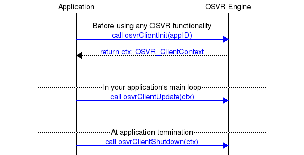

Yuval Boger1 and Ryan A. Pavlik2, December 2014, revised March 2015
OSVR™ is an open-source software platform for VR/AR applications.
OSVR provides an easy and standardized way to discover, configure and operate hundreds of devices: VR goggles, position trackers, depth cameras, game controllers and more. OSVR supports multiple operating systems, plugs into leading game engines and is freely available under a permissive Apache 2.0 license.
OSVR can be extended with open- or closed-source plugins. Plugins can provide support for new devices or add analysis capabilities such as a gesture engine, sensor fusion and data logging and eye tracking.
OSVR was started by experts in gaming and virtual reality and is supported by an ever-growing list of hardware vendors, game studios, universities and software companies.
This white paper provides a high-level overview of the motivation behind OSVR, its structure and key attributes.
Twenty years ago, if you wanted to print a document from WordPerfect, you needed to install the corresponding WordPerfect driver for your printer. Then, operating systems (such as Windows) introduced a standardized printer abstraction layer so that any Windows application could print to any printer that had a Windows driver.
OSVR standardizes the interface between input devices, games and output devices. It provides abstraction layers for VR devices and peripherals so that a game developer does not need to hardcode support for particular hardware. Instead, just like a Windows application prints to the Windows print services, the game developer connects to the OSVR abstraction layer. If a new VR goggle was introduced in 2016, an OSVR-based game published in 2015 could support this new goggle as soon as the goggle had an OSVR driver.
To a game developer, OSVR provides interfaces – pipes of data – as opposed to an API tied to a specific piece of hardware. If there are multiple devices that provide the same type of information (for instance: hand position), these devices can be interchanged. Today, you might get hand position from a Microsoft Kinect. Tomorrow, you might get hand position from a Razer Hydra. You can reconfigure the OSVR "plumbing" so that the game can continue to work well regardless of where hand position is coming from. With OSVR, game developers can focus on what they want to do with the data, as opposed to how to obtain it.
OSVR lets you mix and match hardware and software packages. For instance, if you use an eye tracking camera, you might use the software provided by the camera vendor to calculate gaze direction, but you might also use alternative gaze detection packages. This means that companies or research groups that focus on a particular software or hardware component (e.g. gaze detection module or eye tracking camera) are not left out of the VR eco-system: their expertise can be interconnected with components from others.
For game and application developers OSVR reduces risk:
For hardware manufacturers OSVR:
For software developers OSVR provides the ability to:
For end users OSVR provides freedom and choice, promotes innovation through its open design and eliminates the dependency on any single vendor.
The diagram below shows the conceptual architecture for OSVR.
Applications written on game engines can interact with OSVR via dedicated game engine plugins. Alternatively, an application can directly access the OSVR "ClientKit" interface.
Analysis plugins are software modules that convert data from lower-level device plugins into higher-level information. For instance, a gesture engine plugin can convert a stream of XYZ coordinates to a recognized gesture.
Device plugins connect to physical devices and expose interfaces – pipes of data – to higher layers. For instance, a plugin for a VR goggle can expose a display interface as well as an orientation tracker interface corresponding to an embedded head-tracker. Many device types and dozens of devices are supported.
The adaptation layer provides OS-specific implementation (e.g. Android vs. Windows vs. iOS) as well as allows OSVR devices to be accessed through a network interface such as WiFi or Bluetooth.
The management layer stores and loads system and user-specific configuration locally and in the cloud. It also provides services to download device plugins on-demand, detect when software updates are available and other utility functions.
Source code and well-defined interfaces are provided for all these components. Device and analysis plugins can easily be added by interested parties, and examples of how to do so are provided as part of the OSVR source-code distribution.
Prior to explaining how applications interface with OSVR and how to write plugins for OSVR, we need to touch on a few OSVR technical concepts:
A device is a physical entity such as an orientation sensor or the Razer Hydra controller.
An interface is a pipe of data. A device exposes one or more interfaces. For instance, a Razer Hydra controller exposes several interfaces:
An interface is an instance of an interface class. An interface class defines properties that can be set or queried as well as a set of events that the class generates. A property might be the last obtained XYZ position from an XYZ position interface. An event could be the press of a particular button in a button set interface.
A plugin is a software module that can be dynamically identified, loaded and connected to OSVR. Drivers contained in plugins implement interface classes. There are two types of drivers in plugins:
From the OSVR perspective, both types of plugins are identical, and the distinction is made for human consumption.
OSVR maintains a "path tree" – similar to a URL or file system path – in which all the sensing and rendering data is made available. Aliases are configured in the server to essentially redirect from a semantic path (a path with a meaningful name) all the way back to the system-specific hardware details. Thus, while direct device access by name is possible, it is not recommended: instead, we recommend accessing semantic paths. This accommodates use cases where the hardware is not immediately available at startup or is changed during operation without any impact to the application developer. Some examples:
/me/hands/leftcom.osvr.bundled.Multiserver plugin: /com_osvr_bundled_Multiserver/RazerHydra0/position/0/org_example_smoothing/smooth_filter/0Just like a game allows mapping of various buttons to various game actions, OSVR allows defining the connection between interfaces, analysis plugins and actions. For instance:
/joystick/button/1 → /actions/fire maps the first joystick button into a fire action. While the game could choose to access /joystick/button/1 directly, it is recommended to access /actions/fire in this example because this allows changing the flow of information from the hardware through the OSVR layers without changing the game itself./com_osvr_bundled_Multiserver/RazerHydra0/position/0 → /org_example_smoothing/smooth_filter/0 → /me/hands/left specifies that the position of the first Hydra controller goes through a smoothing filter and then is mapped to the left hand.The connection between interfaces can be pre-loaded or can be changed dynamically. 3
The list of available resources is specified in JSON files as part of the OSVR distribution and is part of the OSVR documentation.
An application can communicate with a plugin in two ways:
An application can use either or both methods. For instance, some applications much choose to query the orientation tracker state in the main loop using a synchronous call whereas they might register for callbacks on certain game controller button presses. Please see examples in the OSVR documentation.
There are three pieces of a minimal application:
These are illustrated in the message state diagram below:

Of course, such an application doesn't really use OSVR in a very productive sense. A sample flow of a more realistic application would also:
Probably before the main loop starts:
During main loop:
During application shutdown, shutdown the library (providing the client context).
These are illustrated in the message state diagram below:
Device and analysis plugins are dynamically loaded by OSVR. Plugins provide support for new types of hardware or analysis functions such as gesture engines.
The OSVR documentation contains example plugins. If you are a hardware or software developer that wants to create an OSVR plugin, please contact us for additional details.
To support a new game engine beyond those already supported in OSVR, the best place to start is "OSVR for game developers" since from an OSVR perspective, a game engine is an application that uses OSVR rather than an OSVR plugin.
As an open-source project, the OSVR community will have a very strong influence on future directions. At present, planned improvements include the following:
We are excited to work with you and see what we can build together with OSVR!